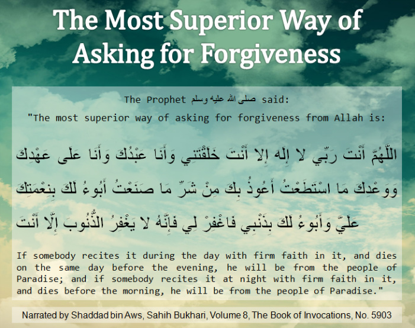

The Most Superior Way Of Asking For Forgiveness
Posted: Thu Dec 01, 2016 11:45 pm

O Allaah You are my Lord, there is none worthy of worship in truth except You, You created me and I am Your slave and I abide by Your covenant and promise as best as I can, I seek refuge in You from the evil that I have committed, I profess to you my sins and I acknowledge Your favour upon me, so forgive me verily no one forgives sins except You.
Source: https://islamtees.wordpress.com/2011/04 ... rgiveness/
O Allaah You are my Lord, there is none worthy of worship in truth except You, You created me and I am Your slave and I abide by Your covenant and promise as best as I can, I seek refuge in You from the evil that I have committed, I profess to you my sins and I acknowledge Your favour upon me, so forgive me verily no one forgives sins except You.
Source: https://islamtees.wordpress.com/2011/04 ... rgiveness/